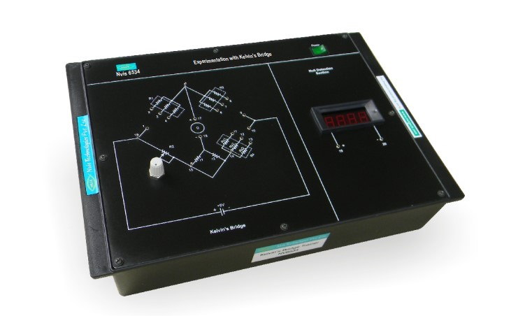

Experimentation with Kelvin's Bridge
Nvis 6534

Kelvin's Bridge
Kelvin's Bridge
Nvis 6534 Experimentation with Kelvin's Bridge is a useful training product for measuring very small values of resistance. Kelvin's double bridge or Kelvin's bridge (as it is commonly known) is a variation of Wheatstone bridge and is based on the same principle. By setting the null point we can evaluate the unknown resistance. This product has Digital Display (DPM) for the purpose of null detection implemented on the trainer board itself.
Features
- Easy illustration of Kelvin's bridge
- Digital display (DPM) for null detection
Technical Specifications
- DC Power Supply : +5V
- Known Resistance : R1=100KΩ, 20KΩ, 10KΩ R3=1KΩ, 200Ω, 100Ω
- Unknown Resistance : 0.3Ω, 0.4Ω, 0.8Ω
- DPM : 2V
- Mains Supply : 230 V ±10%, 50 Hz
- Dimensions (mm) : 240 W x 345 D x 110 H
Scope Of Learning
Determination of unknown resistance using Kelvin's bridge method
To download the manual click here